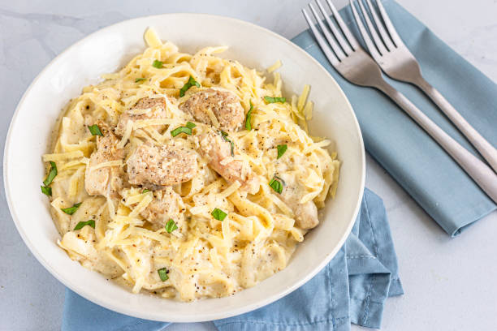

Chicken Alfredo

Description:
It was a cool winter evening. My father had just came back from hiking to work (6 miles, in the snow, uphill, both ways, while fighting a bear), and.... Alright, I kid, I kid. Here's the recipe for the worlds best Chicken Alfredo.
Ingredients list:
- 1 lb. Chicken breasts
- 2 Cloves of Garlic
- 1 box Fettuchini noodles
- 2 sticks of butter
- 1 qt. Heavy whipping cream
- 12 oz. Parmesan cheese (Freshly grated)
- 1 tbsp ground white pepper
- 2 tbsp cream cheese
- Salt & pepper
- Olive oil
- Fresh Parsley
Steps:
-
Fettuchini Noodles
- Start with a large pot of water with a few pinches of salt. Bring it to a rolling boil
- Once the water is at a rolling boil, add enough noodles to support the number of guests to feed, and boil according to package directions
- Once the noodles are cooked, strain and place back in the pot. Add a conservative amount of olive oil to prevent the noodles from sticking
-
Chicken Breasts
- Coat the bottom of a large pan with olive oil, and begin heating the pan on medium-high heat
- Butterfly the chicken breasts, and pound it flat with a meat mallet (or the largest flat-bottomed glass drinking cup you have) to ensure even cooking
- Pat the chicken completely dry with a paper towel, before lightly seasoning both sides of the chicken breasts with salt & pepper
- Once the oil is shimmering in the pan, place 1-3 chicken breasts in the pan, making sure that the pan isn't too crowded
- Cook until the bottom is golden brown, then flip and cook the other side until the internal temperature is 165 degrees fahrenheit
- Repeat until all of the chicken breasts are cooked
-
Alfredo Sauce
- Start with a medium pot on medium-low heat
- Place your two sticks of butter into the pot to begin melting
- While the butter is melting, mince both cloves of garlic. For additional garlic flavor, you can add a 1-2 tsp of salt and scrape the blade of your knife (while laying the knife as flat as possible on the cutting board) across the garlic to turn it into a garlic paste
- With the butter fully melted, turn the heat up to medium for the pot, and add your garlic
- Let the garlic fry in the oil for a minute or two, then add the cream cheese. Softened cream cheese will be easier, and you'll want to break up the cream cheese with a whisk
- After the cream cheese is incorporated into the butter, add the heavy whipping cream.
- Once the sauce begins to bubble or boil, reduce the temperature to a simmer, and stir often to prevent the bottom from burning.
- While waiting for the sauce to thicken, grate your fresh parmesan cheese as fine as possible.
- Continue simmering until thickened. You should be able to coat the back of a spoon, and pull your finger through it, leaving without the liquid filling the void left by your finger
- Once the mixture is thickened as mentioned above, begin slowly adding all but a cup of your grated parmesan cheese, a quarter of a cup at a time, thoroughly but gently whisking the sauce until the cheese is fully melted and emulsified into the sauce.
- After adding all of the cheese (with the exception of the cheese we set aside for garnishing), add salt and white pepper to taste
-
Plating
- Begin with a sizeable portion of your noodles on a warm plate
- Slice the chicken breast and place atop the noodles
- Add a conservative spoonful of sauce on top of the chicken (A little bit of sauce goes a long way!)
- Garnish with pepper, parsley, and parmesan
- (Optional) Serve with some garlic bread
- Enjoy!